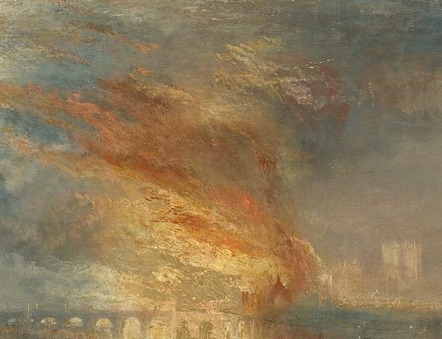
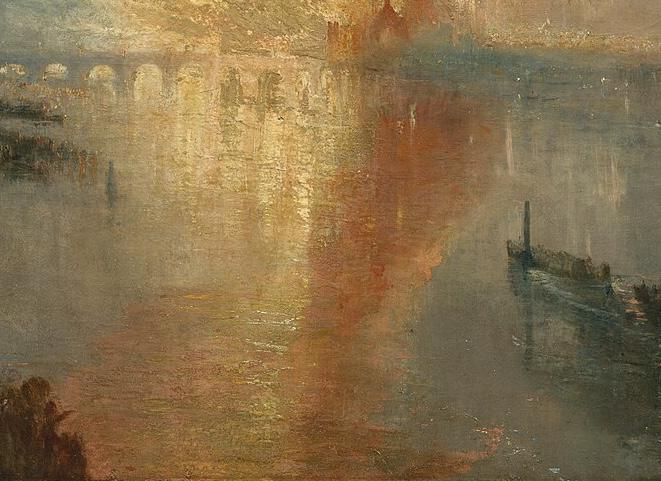
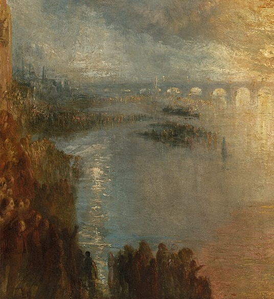

"L'incendio delle Case dei Lord e dei Comuni" non è un documento storico, ma una riflessione filosofica sull'impotenza della civiltà davanti all'infinito.
Nella notte del 16 ottobre 1834, Londra divenne il palcoscenico di una catastrofe sublime. William Turner, il "pittore della luce", non rimase al sicuro nella sua dimora. Si imbarcò sul Tamigi, avvicinandosi il più possibile alle fiamme ruggenti che stavano divorando il cuore politico dell'Impero Britannico. Ciò che emerse da quell'esperienza non fu un resoconto giornalistico, ma un capolavoro che avrebbe scosso le fondamenta dell'estetica romantica, introducendo il concetto di luce come forza distruttrice e creatrice al tempo stesso.
L'Alchimia del Colore

La porzione superiore del dipinto rivela la vera rivoluzione di Turner. Qui, il cielo cessa di essere atmosfera e diventa materia incandescente. L'artista utilizza il Giallo di Cromo, un pigmento allora innovativo, per creare una luminosità che sembra emanare calore fisico. Le pennellate sono rapide, circolari, quasi furiose; Turner non descrive il fumo, lo "evoca" attraverso la vibrazione cromatica. Questa tecnica anticipa di quasi un secolo l'espressionismo astratto, riducendo l'architettura del Parlamento a un semplice scheletro divorato dalla luce.
Il Riflesso: L'Incontro degli Elementi

In basso, il Tamigi smette di essere acqua e diventa uno specchio di oro fuso. Il contrasto tra le tonalità fredde del blu di Prussia della notte e il calore accecante delle fiamme crea una tensione visiva insopportabile. Turner sfrutta la verticalità del riflesso per connettere la terra al cielo, creando un asse di luce che squarcia l'oscurità londinese. È qui che il concetto di Sublime di Edmund Burke prende forma: la bellezza che genera terrore, la grandezza che ci fa sentire infinitamente piccoli.
"La luce è il mio Dio; l'oscurità è la mia sfida."
Il Testimone Muto

Sulla sponda opposta, le sagome del popolo di Londra appaiono come piccole macchie d'inchiostro. La loro presenza è fondamentale: servono da scala metrica per la tragedia. La loro impotenza è la nostra. Turner ci ricorda che, nonostante le conquiste tecnologiche e politiche dell'era industriale, l'uomo resta un osservatore fragile davanti ai cicli primordiali di creazione e distruzione. Le barche, simili a Caronte che traghetta le anime, aggiungono una dimensione mitologica a un evento contemporaneo.